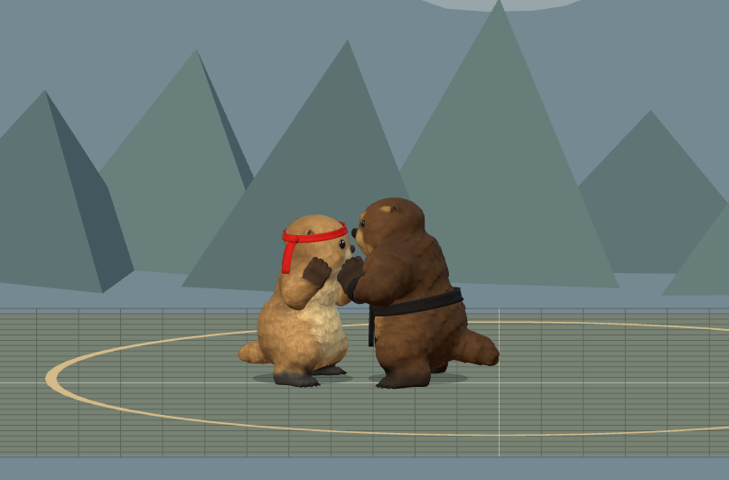
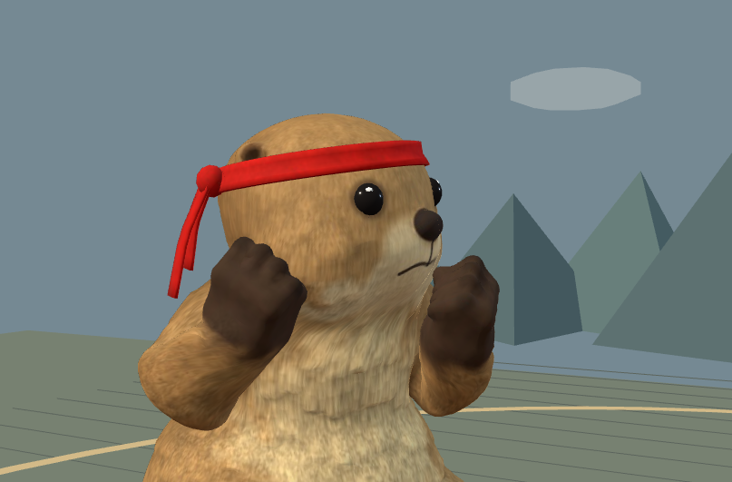
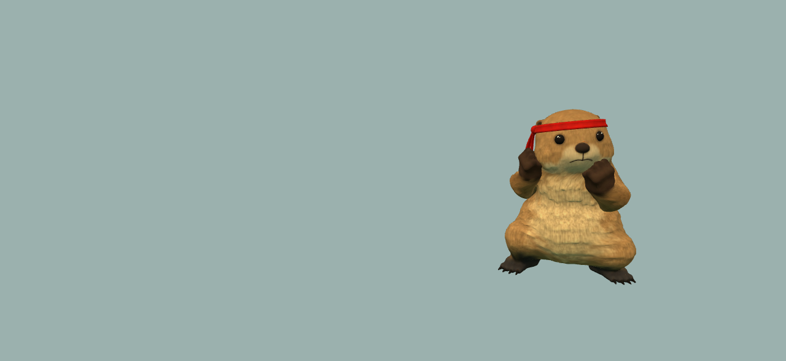
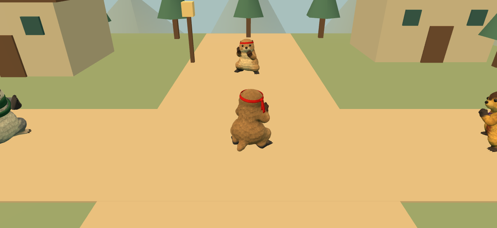

背景は現行ゲーム（PR #209 `8ab8972`）の実 WebGL キャプチャ。その上に ui-art/v17/svg の素材と DOM の文字を重ねた構図案で、ゲームの実装画面ではありません。
A「山の格闘大会」は対戦・モード選択、B「旅の稽古帖」はキャラクリ・探索。色は tokens.json の CSS 変数（--mk-*）。

主役の「戦う」を斜めに切った大きな面に、ほかの 3 つは木札、練習は紙の札で一段小さく。5 モードの数は変えていません。記号は形だけで区別できます（拳／登る稜線と旗／焚き火／足あとの道／稽古柱）。
上段は 体力（斜めの枠）→ その下にドライブ → 中央に木札のタイマー。名前の横にキャラ識別紋。画面の中央（顔・拳・弾の高さ）には何も置きません。6 ボタンと左スティックの位置は現行のままで、台の絵だけを差し替える案です。

モグゾー万能・根性9 人をのぼり（布）で並べ、顔画像の上に識別紋。紋は枠の形と中の図が全員違うので、色が見分けにくくても区別できます。顔画像は既存の assets/ui/facesq_*.png、左の大きな顔は実ゲームの顔アップ（3D）。「得意／苦手」を紙の札で対にします（文面は仮）。

旅の稽古帖右の広い面は実ゲームの 3D プレビュー（現行のエディタと同じ並び）。左は紙の帳面で、4 つの手順を札の重なりで見せ、いま開いている手順だけ木札。使えない技には具体的な理由を書く欄を取っています（文面は例）。

探索は景色が主役なので、常時出すのは場所の札（左上）と移動・会話だけ。相手に近づいたときだけ名前の木札と「話す」。右ドラッグの視点操作のために画面右は空けています。